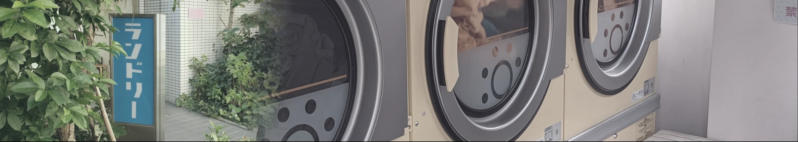

まちの場所にまつわる記憶を、短い戯曲と朗読にして共有するプロジェクト
A project turning memories of places in the city into short plays and audio readings to share.

シアター
Theater
From Nov 7 (Sat), 2026
京都市内のいくつかのコインランドリーで、その周辺のまちにまつわる記憶をもとにつくった戯曲や朗読を、洗濯や乾燥を待ちながら楽しめます。
まだ知らない誰かの経験を通して、いつものまちを違う視点から想像してみませんか。
At laundries across Kyoto, read short plays and listen to audio readings based on memories of the surrounding area while you wait. Imagine familiar places through someone else’s experience.
ランドリーシアターの開催店舗はこちら
Theater locations

店舗名を押すと、各店舗の作品ページを開きます。 Select a laundry name to open its page.
作品を読む・聴く／投稿する

店内のスタンドやカードのQRから、その店舗の作品サイトを開く。
Scan the QR code on a stand or card to open this laundry’s site.

地図や一覧から気になる場所を選び、戯曲を読み、朗読を聴く。
Choose from the map or list to read a play or listen.

まちの写真・印象・記憶や、作品へのコメントを投稿する。
Post local photos, impressions, memories or comments on the works.
戯曲は、演劇の上演のために書かれた脚本です。本企画では、短いエッセイや詩的な表現も含め、戯曲として扱います。
Plays are scripts written for theatrical performance. In this project, short essays and poetic expression are also treated as plays.
音声はイヤホン、または周囲の方の迷惑にならない音量でお楽しみください。
Use headphones or keep the volume low enough not to disturb others.
戯曲をつくる
ワークショップ
Playwriting workshop
シアターに投稿された情報を手がかりに、短い戯曲を一緒につくり、朗読します。
Create and read a short play using information posted to the Theater.
2026
Nov 21 (Sat) & Dec 6 (Sun), 2026
各日 13:00–17:00
1–5 pm each day
1日でも両日でも参加可
Join either or both days.
@KYOTO LAUNDRY CAFE
京都市中京区壬生淵田町10-1
阪急・嵐電 西院駅から徒歩約4分
10-1 Mibu Fuchida-cho / 4 min from Saiin
- 参加費
- ワンドリンクのご注文Please order one drink at the café.
- 使用言語
- 日本語Conducted in Japanese.
3〜4人程度のグループをつくる。
Form groups of around 3–4 people.
投稿された情報を手がかりに、短い戯曲をつくる。
Use contributions to the Theater to create a short play.
完成した戯曲を全体で朗読する。
Read the completed plays aloud together.
完成作品と朗読音声は、作品サイトで共有します。
The completed works and audio readings will be shared on the Theater website.